Trading Guide¶
Instrument Selection¶
Open a New Position (Market Order)¶
If you have only one trading account, this account will be selected automatically; otherwise, select the one that you want to trade from in the Information bar.
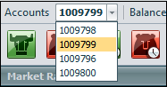There are the following opportunities to create an order:
- Press “Sell” or “Buy” buttons on the Trading Panel;
- Left-click on the Sell or Buy Price value of the instrument in Market Rate Window;
- Right-click on the instrument in Market Rate or Instrument Information Window and choose “Sell” or “Buy” from the pull-down menu;
- Right-click on Chart and choose “Sell” or “Buy” from the pull-down menu.
After doing one of these actions the “New Position” window box will appear:
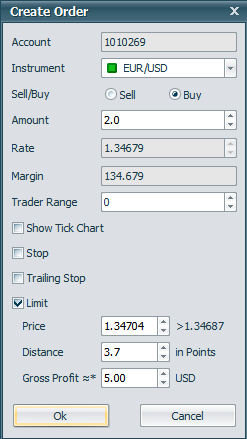Enter the order amount in lots into the “Amount” field, choose the order’s direction and enter trader range value, then press “Ok” to submit the order.
Note
The Trader Range is your tolerance to price change. It is a range (in pips) from your original order price within which you would still be willing to place the order. If the market price changes while you are placing an order, you will receive the following notification message offering you to accept new price or remove order within a certain time period.
If the new price is within the Trader Range, then the order will automatically go through at the new price. If the market shifts while you are placing an order, the dealer may reject your order and offer you a new market price. If the dealer’s new price is within the Trader Range, the order will automatically go through at the dealer’s new price.
Note
Once you press “Ok” your order will be sent out for execution.
Note
Upon confirmation, a new position will be opened and will appear in the Open Positions window.
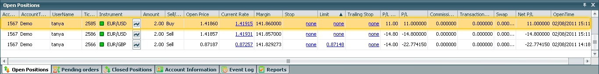Close a Position¶
Hedge Positions¶
Set Stop/Limit and Trailing Stop Orders¶
Unlike Entry Stop and Entry Limit orders, conventional Stop and Limit orders are aimed at closing existing positions when a certain price is reached.
There are the following opportunities to set Stop/Limit/Trailing Stop to an order:
- Set predefined Stop and Limit. Click on the checkbox “Stop”, “Limit” or “Trailing Stop” in the Create Order or Create Entry Order.
- Use “Set Stop/Limit” button in Pending Orders window;
- Choose “Set Stop and Limit orders” in pop-up menu in Pending Orders or Open Positions windows;
- Left-click on the cells “Stop”, “Limit” or “Trailing Stop” of wanted position in Pending Orders or Open Position windows.
To set Stop or Limit you can fill one of the fields: Price, Distance or P/L. Enter in “Price” field the value of market rate on which the order must be closed, in “Distance” - the value in pips from current close rate or in “P/L =” field - the wanted value of Loss for Stop or Profit for Limit.
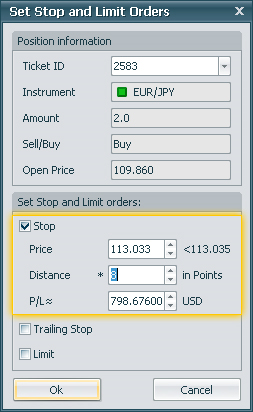Enter the desired values and press “Ok”.
It will be shown in the Open Positions or Pending Orders window in the Stop or Limit column.
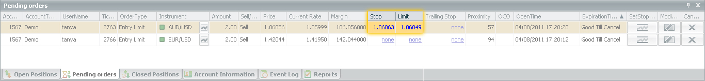Note
You can also edit the Stop/Limit/Trailing Stop setting at the same way as you set them.
Trailing Stop¶
Trailing Stop works as follows: If the market price moves in the direction, coinciding with the direction of the position (UP for a Buy position/DOWN for a Sell position), then the Trailing Stop moves with the market price, following it at the preset distance. If the market price moves in the another direction (DOWN for a Buy position/UP for a Sell position), then the Trailing Stop remains fixed and, if the market price reaches the Trailing Stop price, the order will be executed.
To set the Trailing Stop check the “Trailing Stop” check box in the “Set Stop and Limit”, “Create Order” or “Create Entry Order” dialog box and enter the distance value in pips. Then press “Ok”.
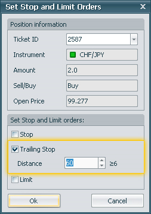The Trailing Stop Distance value will appear in the “Trailing Stop” field of the position in Open Positions or Pending Orders window and a Trailing Stop order will appear. The Trailing Stop’s current price will appear in “Stop” field of order or position.
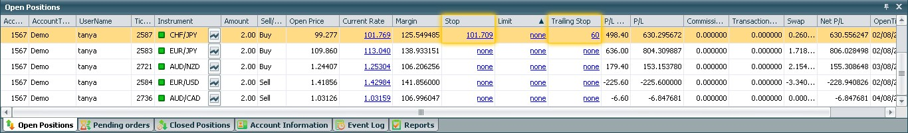Create an Entry Order¶
Create an OCO Order¶
Margin Call¶
See your Profit/Loss¶
There are a few values in order to assess the state of your account in UniTrader.
P/L pips - The difference in pips between the Open price and Current price for each position.
Calculation: P/L Pips =
- Sell: = (Open Price – Current Rate) * 10^k * Amount;
- Buy: = (Current Rate - Open Price) * 10^k * Amount;
Where k is the number of the pip.
P/L - Profit or loss in the base currency for the transaction.
Calculation: P/L =
- AAA/USD: P/L Pips / 10^k;
- USD/AAA: P/L Pips / (10^k * (Ask(USD/AAA) + Bid(USD/AAA)) / 2);/
- AAA/BBB -> USD/BBB: P/L Pips / (10^k * (Ask(USD/BBB) + Bid(USD/BBB)) / 2);
- AAA/BBB -> BBB/USD: P/L Pips / (10^k) * (Ask(BBB/USD) + Bid(BBB/USD)) / 2;
Where k is the number of the pip.
Net P/L - Profit or loss in the base currency for the transaction taking into account commissions, transaction fees and swaps.
Calculation: Net P/L = P/L + Commission + Transaction Fee + Swap;
Equity - Figure at the closing position.
Calculation: Equity = Balance + Summary P/L;
Used Margin – The amount of money in your account that is currently used to keep positions open.
Calculation: Used Margin = ∑(open positions) Margin;
Margin = Amount * Lots * Open Price * Cross Pair / Leverage;
Usable Margin – The amount that is currently available to open new positions; note that if you are gaining or losing on open positions, the amount of usable margin will differ accordingly.
Calculation: Usable Margin = Equity – Used Margin = Balance + Summary P/L – Used Margin;
You can see summarized P/L in the following places of the workspace:
On the Trading Panel:
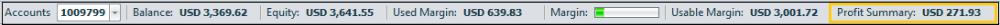In the Account Information Window:

Also in the Open Positions window you are able to view each open position’s P/L individually.
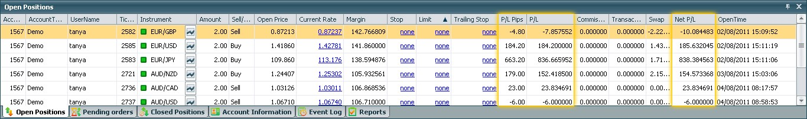In the Close Positions window you can see P/L for closed positions individually.
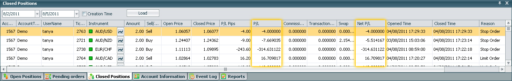Also in the Close Position Dialog you can see P/L Pips, P/L and Net P/L for current position.
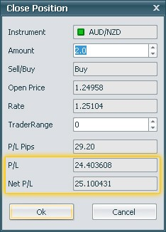